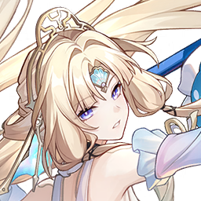

복슬복슬호 자료실
무엇을 찾으세요?
검색 결과
자료 153개

에이언즈★아하 육성 가이드
사도 지정 → 원력 8pt 필살기 · 환락만상 3턴 동안 아군 승격
읽어보기
어벤츄린•웨이브 육성 가이드
동료 공격 → 열의 · 열의 소비로 추가 타격 환락 스킬
읽어보기
로빈•서머레토 육성 가이드
무대 열기 → 맑은하늘 세션 전원 소환 · Fever 결계
읽어보기
히메코•노바 육성 가이드
동행 프로토콜 지원 스킬 · 코어 동력으로 궤도 섬멸 펄스
읽어보기
길가메시 육성 가이드
아군 필살기로 흥미·에너지 확보 · 세이버와 연계 추가 공격
읽어보기
토오사카 린 육성 가이드
SP 소모·회복 → 보석 에너지 · 아처 연계 추가 공격
읽어보기
천야•블레이드 육성 가이드
전신살화 결계 · 아군 공격의 충전 → 추가 전투 스킬
읽어보기
은랑 LV.999 육성 가이드
히든 스코어 60pt → 무적 플레이어 · SP 소모로 보급상자
읽어보기
에바네시아 육성 가이드
에너지 ↔ 훌륭한 솜씨 상호 수급 · 여우 선생님 추가 공격
읽어보기
애쉬베일 육성 가이드
미끼 → 적 전체 방어력 감소 · 아군 공격에 연동하는 추가 공격
읽어보기
펄 육성 가이드
상쇄 게이지로 아군 피해 60% 상쇄 · 미학의 저본 행동 당김 · 팀 치유
읽어보기
효광 육성 가이드
환락도 결계 · 필살기로 아하 보너스 턴과 저항 관통
읽어보기
스파키 육성 가이드
상호작용 함정 → 킬링 포인트로 SP 상쇄 · 강화 일반 공격
읽어보기
키레네 육성 가이드
기억·황금의 후예가 추억 충전 → 데미우르고스의 개별 지원
읽어보기
단항•등황 육성 가이드
전우 지정 → 공격력 비례 실드 · 용령의 보조 공격
읽어보기
에버나이트 육성 가이드
기억 물질 → 긴 밤의 광역 피해 · 기억 정령 치피 지원
읽어보기
케리드라 육성 가이드
군공 충전 → 작위로 딜러 전투 스킬 복제
읽어보기
히실렌스 육성 가이드
다종 지속 피해 부여 → 결계 피해와 카프카 기폭
읽어보기
히아킨 육성 가이드
필살기 비 온 뒤 맑음 → 팀 HP 최대치·이카 후속 회복
읽어보기
파이논 육성 가이드
불씨 12pt → 카오스라나 보너스 턴 8회와 물리 약점 부여
읽어보기
카스토리스 육성 가이드
아군 HP 변동을 활용해 죽음의 용을 소환하고 광역 피해를 가합니다.
읽어보기
사이퍼 육성 가이드
팀 피해를 기록하고 필살기로 확정 피해를 터뜨립니다.
읽어보기
아낙사 육성 가이드
여러 약점을 부여하고 약점 5종에 도달한 적을 치면 추가 스킬을 발동합니다.
읽어보기
마이데이 육성 가이드
자신의 HP를 소모해 피의 원한을 활성화하고 자동 강화 스킬을 발동합니다.
읽어보기
트리비 육성 가이드
신의 계시로 저항 관통을 제공하고 필살기 결계로 적이 받는 피해를 높입니다.
읽어보기
아글라이아 육성 가이드
의상공과 연계 공격을 하며 지고의 자태를 유지합니다.
읽어보기
더 헤르타 육성 가이드
아군의 광역 공격으로 해독을 쌓고 강화 스킬로 소모합니다.
읽어보기달리아 육성 가이드
미격파 적에게도 슈퍼 격파를 부여하는 격파 지원입니다.
읽어보기
라파 육성 가이드
결인 중 강화 일반 공격으로 다수 적의 강인성을 감소시킵니다.
읽어보기
부트힐 육성 가이드
대치 중 약점 격파·처치로 포켓 어드벤티지를 쌓고 강화 일반 공격으로 격파 피해를 냅니다.
읽어보기
제이드 육성 가이드
수금업자가 공격한 적 수에 비례해 충전하고 광역 추가 공격을 가합니다.
읽어보기
선데이 육성 가이드
딜러와 소환물을 함께 당기고 필살기로 에너지를 충전합니다.
읽어보기
미샤 육성 가이드
파티가 사용한 스킬 포인트로 필살기의 공격 단수를 늘립니다.
읽어보기
반디 육성 가이드
화염 딜러 · 완전연소와 슈퍼 격파
읽어보기
로빈 육성 가이드
협주에서 팀 전체 행동을 앞당기고 공격력·물리 추가 피해를 제공합니다.
읽어보기
아케론 육성 가이드
디버프로 꿈 조각을 모아 약점을 무시하는 광역 필살기를 사용합니다.
읽어보기
블랙 스완 육성 가이드
아르카나를 쌓고 방어력을 낮추는 지속 피해 딜러입니다.
읽어보기
스파클 육성 가이드
동료의 행동을 당기고 치명타 피해와 전투 스킬 포인트를 지원합니다.
읽어보기
Dr. 레이시오 육성 가이드
디버프가 쌓인 적에게 추가 공격을 발동합니다.
읽어보기
어벤츄린 육성 가이드
견고한 칩을 중첩하고 피격과 동료 추가 공격에 반응합니다.
읽어보기
완·매 육성 가이드
약점 격파 효율 증가 · 격파 상태 연장
읽어보기
아젠티 육성 가이드
공격한 적 수로 에너지를 모아 광역 필살기를 사용합니다.
읽어보기
갤러거 육성 가이드
4성 힐러 · 만취로 치유·격파 피해 지원 · 포인트 수급
읽어보기
망귀인 육성 가이드
추가 강인성으로 두 번째 격파를 열고 파티에 슈퍼 격파를 부여합니다.
읽어보기
Mar. 7th · 수렵 육성 가이드
사부의 행동으로 충전해 강화 일반 공격을 쓰는 허수 수렵입니다.
읽어보기
맥택 육성 가이드
사냥감을 지정하고 아군의 공격을 따라 추가 공격을 발동합니다.
읽어보기
영사 육성 가이드
부원으로 전체 치유·해제·화염 강인성 감소를 제공합니다.
읽어보기
운리 육성 가이드
적의 공격 타이밍에 맞춰 막기를 사용하고 강한 반격으로 응수합니다.
읽어보기
비소 육성 가이드
아군 공격에서 비황을 쌓아 단일 대상 필살기를 반복합니다.
읽어보기
초구 육성 가이드
훈작과 결계로 적이 받는 피해 및 필살기 피해를 늘립니다.
읽어보기
곽향 육성 가이드
강화 곽향 · 치유·디버프 해제·에너지와 공격력 지원
읽어보기한아 육성 가이드
부담을 공격해 전투 스킬 포인트를 수급하고 한 명의 속도와 공격력을 높입니다.
읽어보기
설의 육성 가이드
강인성 감소로 업보를 쌓아 양자 추가 공격을 발동합니다.
읽어보기
단항·음월 육성 가이드
역린과 전투 스킬 포인트로 일반 공격을 3단계 강화합니다.
읽어보기
경류 육성 가이드
아군 HP를 소모하며 전백에서 강화 스킬을 사용합니다.
읽어보기
백로 육성 가이드
생명으로 피격 후 치유하고 치명타격으로 쓰러지는 동료를 되살립니다.
읽어보기
계네빈 육성 가이드
연소와 불쇼로 지속 피해를 쌓고 적이 받는 피해를 높입니다.
읽어보기
연경 육성 가이드
신검합일의 치명타 보너스로 단일 적을 공격합니다.
읽어보기
부현 육성 가이드
궁관진으로 아군 피해 분담 · 치확·제어 저항 제공
읽어보기
어공 육성 가이드
아군 행동 순서에 맞추는 공격력·치명타 지원
읽어보기
소상 육성 가이드
물리 약점 격파 적에게 검세 · 필살기 후 즉시 행동
읽어보기
블레이드 육성 가이드
HP를 소모해 강화 평타와 전체 추가 공격 발동
읽어보기
경원 육성 가이드
신군 중심 번개 추가 공격 · 기연 성혼으로 최대 30단
읽어보기
나찰 육성 가이드
자동 단일 치유 · 결계에서 아군 공격으로 회복
읽어보기
정운 육성 가이드
한 딜러에게 에너지·공격력·피해 증가 제공
읽어보기
청작 육성 가이드
전투 스킬로 패를 맞춘 뒤 강화 일반 공격
읽어보기토파즈&복순이 육성 가이드
부채 증명으로 추가 공격 취약 · 복순이 추가 공격
읽어보기
루카 육성 가이드
단일 열상 기폭 · 물리 약점 격파
읽어보기
링스 육성 가이드
파티 정화·치유 · 보존·파멸 대상 피격 확률 증가
읽어보기
후크 육성 가이드
연소 부여 후 강화 전투 스킬로 확산 공격
읽어보기
삼포 육성 가이드
풍화 중첩과 광역 지속 피해 취약
읽어보기클라라 육성 가이드
피격될 때 반격 · 필살기로 동료 피격도 반격
읽어보기
페라 육성 가이드
광역 방어력 감소 · 전투 스킬 적 버프 해제
읽어보기
나타샤 육성 가이드
필살기 전원 회복 · 전투 스킬 단일 정화
읽어보기
게파드 육성 가이드
필살기 파티 실드 · 전투 스킬 단일 빙결
읽어보기
서벌 육성 가이드
감전 유지 광역 딜러 · 더 헤르타 지원용 빠른 필살기
읽어보기
제레 육성 가이드
처치 후 보너스 턴 · 체력 50% 이하 적 추격
읽어보기
브로냐 육성 가이드
단일 딜러 즉시 행동·정화 · 전원 치명타 피해 지원
읽어보기
아처 육성 가이드
스킬 포인트를 모아 한 턴에 연속 사용하는 양자 딜러
읽어보기
세이버 육성 가이드
노심 공명·300pt 에너지로 대형 광역 필살기
읽어보기
헤르타 육성 가이드
적 HP 50% 도달로 광역 추가 공격을 연쇄하는 얼음 딜러
읽어보기
아스타 육성 가이드
전원 속도 증가 · 충전 스택으로 공격력 지원
읽어보기
아를란 육성 가이드
HP를 소모해 SP 없이 공격하는 번개 딜러
읽어보기
은랑 육성 가이드
첫 편성 아군의 약점 이식 · 광역 방어력 감소
읽어보기
카프카 육성 가이드
강화 카프카 · 지속 피해 기폭 · 회전 지원·본인 피해 세팅
읽어보기
웰트 육성 가이드
무중력으로 광역 방어력 감소 · 감속과 행동 지연
읽어보기
히메코 육성 가이드
동료의 약점 격파를 추가 공격으로 잇는 화염 광역 딜러
읽어보기
단항 육성 가이드
감속 뒤 필살기로 마무리하는 단일 바람 딜러
읽어보기
Mar. 7th 육성 가이드
단일 실드·정화 · 광역 빙결과 반격
읽어보기
개척자(환락) 육성 가이드
필살기 단일 치피·제어 해제 → 대상 환락 스킬 즉시 발동
읽어보기
개척자(기억) 육성 가이드
미미 충전 → 동료 즉시 행동 · 미미의 응원 확정 피해
읽어보기
개척자(화합) 육성 가이드
댄스 파트너 부여 → 약점 격파 적 공격으로 슈퍼 격파
읽어보기
개척자(보존) 육성 가이드
도발로 단일 공격 유도 · 행동마다 팀 실드 갱신
읽어보기
개척자(파멸) 육성 가이드
물리 약점 격파로 특성 공격력 · 필살기 단일/확산 분기
읽어보기교활한 토끼굴로 배우는 첫 편성과 W-엔진
엔비로 그로기를 만들고 니콜의 지원을 받은 빌리로 공격해 보세요. W-엔진의 특성과 6번 디스크의 주 옵션부터 확인합니다.
읽어보기첫 파티의 원소 반응과 성유물 고르기
케이아와 바바라로 빙결을 연습하고, 주력 캐릭터의 무기·특성과 성유물 주 옵션에 먼저 투자하세요.
읽어보기제로와 함께 시작하는 에스퍼 사이클
빛 속성 제로와 령 또는 상 속성 동료를 조합해 사이클을 발동하고, 아크·카트리지·드라이브를 설정하세요.
읽어보기협주 교대와 에코로 첫 파티 맞추기
협주 에너지를 채워 반주·변주 스킬을 연결하고, 공명자의 역할에 맞춰 메인 에코와 화음 효과를 고릅니다.
읽어보기단항 감속·바람 저항 관통 파티
어공·브로냐가 단항의 공격 순서를 확보
읽어보기히메코·헤르타 허구 이야기 파티
화염 약점 적을 먼저 격파해 히메코 충전
읽어보기웰트 무중력·허수 딜러 파티
페라와 웰트가 방어력 감소를 적용
읽어보기아를란 저HP·실드 파티
아를란 피격 전에 실드
읽어보기세이버 고에너지 필살기 파티
아군 필살기로 노심 공명 누적
읽어보기아처 연속 전투 스킬 파티
사이퍼와 나찰의 일반 공격으로 SP 확보
읽어보기제레·은랑 양자 약점 파티
1번 제레의 양자 속성을 은랑 스킬로 우선 이식
읽어보기서벌의 더 헤르타 해독 지원 파티
서벌이 열쇠와 회복효율 매듭으로 광역 필살기 준비
읽어보기클라라·링스 반격 파티
링스 스킬로 클라라 피격 확률을 높임
읽어보기삼포·루카 지속 피해 기폭 파티
삼포 풍화·루카 열상 먼저 적용
읽어보기후크 연소·화염 피해 파티
아스타 스킬로 불 약점 적의 강인성 감소
읽어보기토파즈·비소 집중 추가 공격 파티
토파즈로 주 대상에게 부채 증명
읽어보기청작 강화 일반 공격·SP 파티
스파클 필살기와 유지력 평타로 SP 마련
읽어보기경원 기연 성혼 신군 파티
경원 스킬·필살기로 신군 공격 단수 누적
읽어보기블레이드 HP 소모·치유 파티
블레이드 지옥변으로 HP 소모 시작
읽어보기소상 물리 격파 파티
완·매 스킬과 개척자 필살기로 격파 준비
읽어보기연경 실드 유지 파티
견고한 칩으로 신검합일을 지키면서 연경의 필살기를 집중합니다.
읽어보기경류 전백 HP 소모 파티
치유와 행동 지원으로 전백의 강화 스킬을 늘립니다.
읽어보기단항·음월 포인트 소모 파티
스파클로 포인트를 확보하고 기연 성혼의 일반 공격형 추가 공격을 발동합니다.
읽어보기설의 업보·슈퍼 격파 파티
추가 강인성을 활용해 업보 스택을 쌓고 추가 공격과 슈퍼 격파를 반복합니다.
읽어보기카프카·블랙 스완 지속 피해 기폭 파티
아르카나와 다른 지속 피해를 쌓아 카프카의 스킬·필살기로 발동합니다.
읽어보기비소 비황 추가 공격 파티
동료의 공격 빈도를 높여 비황을 쌓고 비소 필살기를 반복합니다.
읽어보기운리 막기 반격 파티
운리가 피격될 순간에 필살기를 사용하고 간파·멸 반격을 가합니다.
읽어보기아젠티 광역 필살기 파티
적 다수를 공격해 에너지를 모으고 다음 웨이브에 필살기를 이어갑니다.
읽어보기Dr. 레이시오 디버프 추가 공격 파티
초구가 디버프를 먼저 걸고 레이시오가 칠판 추가 공격을 발동합니다.
읽어보기아케론 기연 성혼·디버프 파티
천야·블레이드 결계에서 꿈 조각을 쌓고, 아즈사카 표적 공격으로 기연 성혼을 발동합니다.
읽어보기반디 완전연소 슈퍼 격파 파티
달리아 결계로 격파 전에도 슈퍼 격파를 가하고 격파 보조로 강인성을 빠르게 소모합니다.
읽어보기미샤 빙결·포인트 파티
소비한 스킬 포인트로 미샤 필살기 타격을 늘리고 빙결을 겁니다.
읽어보기제이드 수금업자 광역 공격 파티
광역 공격을 자주 쓰는 수금업자가 제이드의 추가 공격을 충전합니다.
읽어보기부트힐 대치 격파 파티
추가 강인성과 행동 당김으로 첫 포켓 스택과 보스 격파를 앞당깁니다.
읽어보기라파 광역 격파 파티
추가 강인성에서 격파 횟수를 늘려 결인 중 광역 피해를 반복합니다.
읽어보기더 헤르타 이중 지식 파티
두 번째 지식 동료와 광역 공격으로 해독을 모아 강화 스킬을 가합니다.
읽어보기아글라이아 의상공 연계 공격 파티
선데이의 행동 당김과 곽향의 에너지 지원으로 지고의 자태를 갱신합니다.
읽어보기마이데이 피의 원한 파티
치유로 HP 소모를 복구하고 강화 스킬을 더 자주 발동합니다.
읽어보기아낙사 단독 지식 연속 스킬 파티
약점을 빠르게 늘려 추가 전투 스킬과 단독 지식 치명타 피해를 확보합니다.
읽어보기카스토리스 죽음의 용 파티
아군 HP 소모와 치유로 새로운 꽃술을 모아 죽음의 용을 계속 소환합니다.
읽어보기파이논 변신 집중 파티
불씨 12pt → 카오스라나 보너스 턴 8회와 물리 약점 부여
읽어보기히실렌스 지속 피해 파티
다종 지속 피해 부여 → 결계 피해와 카프카 기폭
읽어보기에버나이트 긴 밤 집중 파티
기억 물질 → 긴 밤의 광역 피해 · 기억 정령 치피 지원
읽어보기스파키 SP 소비 파티
상호작용 함정 → 킬링 포인트로 SP 상쇄 · 강화 일반 공격
읽어보기애쉬베일 미끼 연타 파티
미끼 → 적 전체 방어력 감소 · 아군 공격에 연동하는 추가 공격
읽어보기에바네시아 환락 파티
에너지 ↔ 훌륭한 솜씨 상호 수급 · 여우 선생님 추가 공격
읽어보기은랑 LV.999 변신 보급상자 파티
히든 스코어 60pt → 무적 플레이어 · SP 소모로 보급상자
읽어보기천야 결계와 아케론 필살기 파티
전신살화 결계 · 아군 공격의 충전 → 추가 전투 스킬
읽어보기린·아처 보석 연계 파티
SP 소모·회복 → 보석 에너지 · 아처 연계 추가 공격
읽어보기길가메시·세이버 연계 파티
아군 필살기로 흥미·에너지 확보 · 세이버와 연계 추가 공격
읽어보기히메코•노바 판결 동행 파티
동행 프로토콜 지원 스킬 · 코어 동력으로 궤도 섬멸 펄스
읽어보기웨이브 추가 공격·환락 승격 파티
동료 공격 → 열의 · 열의 소비로 추가 타격 환락 스킬
읽어보기파멸 개척자 초반 물리 파티
물리 약점 격파로 특성 공격력 · 필살기 단일/확산 분기
읽어보기보존 개척자 도발 디버프 파티
도발로 단일 공격 유도 · 행동마다 팀 실드 갱신
읽어보기화합 개척자 슈퍼 격파 파티
댄스 파트너 부여 → 약점 격파 적 공격으로 슈퍼 격파
읽어보기기억 개척자 미미 집중 파티
미미 충전 → 동료 즉시 행동 · 미미의 응원 확정 피해
읽어보기개척자 환락 스킬 지원 파티
필살기 단일 치피·제어 해제 → 대상 환락 스킬 즉시 발동
읽어보기어벤츄린•웨이브 4환락 파티
효광·아하 타임에서 환락 스킬을 반복하고, 펄의 미학의 저본으로 보너스 턴 확보
읽어보기![]()
아하 속도 계산기
파티의 속도와 행동 순서를 확인하고, 목표에 필요한 속도를 찾아보세요.
계산기 열기검색 결과가 없어요
캐릭터 이름을 짧게 입력하거나 다른 게임·종류를 선택해 주세요.